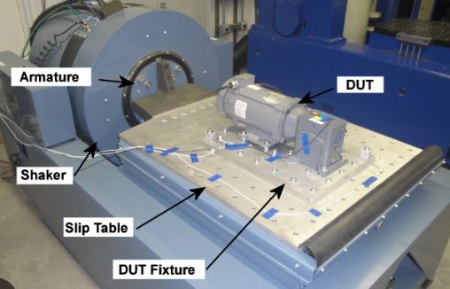

Capability analysis is a set of calculations used to assess whether a system is statistically able to meet a set of specifications or requirements. To complete the calculations, a set of data is required, usually generated by a control chart; however, data can be collected specifically for this purpose
Cp and Cpk are called Process Capability. Pp and Ppk are called Process Performance. In both cases, we want to try to verify if the process can meet Customer CTQs (requirements).
Cp and Cpk are used for Process Capability. Generally, you use this when a process is under statistical control. This often happens with a mature process that has been around for a while. Process capability uses the process sigma value determined from either the Moving Range, Range, or Sigma control charts.
Pp and PPk are used for Process Performance. Generally, you use this when a process is too new to determine if it is under statistical control. Ex. you are piloting a new process or testing a short pre-production run. Because there is not a lot of historical data, we take large samples from the process to account for variation. Process Performance generally uses sample sigma in its calculation.
In theory, Cpk will always be greater than or equal to Ppk. There are anomalies seen when the sample size is small, and the data represents a short amount of time where estimating using R will overstate standard deviation and make Cpk smaller than Ppk. It is not real; there can never be less variation in the long term since the long term is using all of the data, not just two pieces of data from every subgroup.
Evaluating process capability with Cp & Cpk mirrors what is done (and why it is done) when following the Pp & Ppk approach. The main difference is that you use Cp & Cpk after a process has reached stability or statistical control.
Basic statistics & How to do Cpk analysis using Minitab
How to Calculate Cpk
Cpk is a measure to show how many standard deviations the specification limits are from the center of the process. On some processes, you can do this visually. Others require an equation.
To find Cpk you need to calculate a Z score for the upper specification limit (called Z USL) and a Z score for the lower specification limit (called Z LSL).
Since we are trying to measure how many standard deviations fit between the center line and the specification limit, you should not be surprised that the value of those limits, the process mean, and the standard deviation are all components of the Z calculation.
Cp is an abbreviation. There are really two parts, the upper and the lower denoted Cpu and Cpl, respectively. Their equations are:
Cpl = (Process Mean – LSL)/(3*Standard Deviation)
Cpu = (USL – Process Mean)/(3*Standard Deviation)
Cpk is merely the smallest value of the Cpl or Cpu denoted: Cpk= Min (Cpl, Cpu)
Six Sigma
Six Sigma is a set of methodologies and tools used to improve business processes by reducing defects and errors, minimizing variation, and increasing quality and efficiency. The goal of Six Sigma is to achieve a level of quality that is nearly perfect, with only 3.4 defects per million opportunities.
Lean Six Sigma
Six Sigma focuses on reducing process variation and enhancing process control, whereas lean drives out waste (non-value added processes and procedures) and promotes work standardization and flow. The distinction between Six Sigma and lean has blurred, with the term "lean Six Sigma" being used more and more often because process improvement requires aspects of both approaches to attain positive results.
Lean Six Sigma is a fact-based, data-driven philosophy of improvement that values defect prevention over defect detection. It drives customer satisfaction and bottom-line results by reducing variation, waste, and cycle time, while promoting the use of work standardization and flow, thereby creating a competitive advantage. It applies anywhere variation and waste exist, and every employee should be involved.
Reliability Engineering
Product reliability testing can help to predict future behavior during the complete life cycle of the product, component or material under test. In combination with the measurement of relevant parameters and the use of appropriate analytical methods, it is also possible to identify failure modes.
Environmental simulation
High/low temperature (-100°C to 300°C)
and humidity (0°C to 100°C) (5%RH to 100%RH)
Power temperature Cycling (PTC) (change rate >10 min)
Thermal cycling (-70°C to 150°C)
Thermal shock (cold -65°C and 0°C; warm 60°C and 200°C)
Highly Accelerated Stress Test (HAST)/corrosion testing (between 105°C and 143°C; between 75 and 100%RH)
Solar/UV simulation (solar up to 1120 W/m2; UV test UV-A or UV-B)
Corrosive gas exposure
Ingress protection testing (water and dust ingress protection)
Salt mist/salt spray testing
UV-C irradiation
Impact testing
* Optional in-situ testing is also available: Event detection (Low resistance), real time logging of current/voltage/resistance/lumen output (I/V/L/R vs. time) etc.
Designing Reliability Test Plans
Reliability testing and verification of your product is only useful if it is based on good lifetime data analysis. The correlation between an accelerated reliability test and the real lifetime of the product is very important. Prior to designing a reliability test plan, it is important (and necessary) to address the following questions:
Which types of test(s) are relevant for my product?
How long do I need to test for?
What stress level should be used during the reliability test itself?
What are the pass/fail criteria?
The data obtained during (and after) the reliability test can be transferred into various software packages for analysis and further interpretation. The test results can be extrapolated into predicted remaining lifetime of the product.
If you need a quick statistical analysis, development of a full reliability test program or something in between, then we can help you. Our lab equipment, staffing and consulting for test plan design can be fully customized to meet your specific needs.
Highly Accelerated Lifetime Test (HALT)
HALT is an accelerated product reliability test method focused on finding design or component weaknesses in products. It helps to shorten the product development process and failures can be avoided in advance, before they become expensive field issues. With HALT, a product is subject to a series of overstresses to accelerate fatigue in the parts, i.e. the samples are tested outside of the normal operating specifications. It is a test to the point of failure.
Transportation Test
Drop and Vibration test are done to evaluate the packaging material is suitable or not.

Multiple Enviornmental Over Stress Testing (MEOST)
MEOST is used to prove the robustness of your product before it goes to the market. It is a test method that stresses the product as far as possible beyond the design specification, but within the known destructive limits (defined with a HALT test). A combination of stresses is applied to create interactions that can lead to product failures. MEOST makes use of environmental stresses in combination with dynamic electrical in- and output parameters (input voltage, frequency, mains-dips, output current/load).
Compatibility Testing
Surface degradation (discoloration, change of texture, etc.)
Chemical compatibility
Gas exposure testing
MTBF
Mean Time Between Failure (MTBF) measures the average time that equipment is operating between breakdowns or stoppages. Measured in hours, MTBF helps businesses understand the availability of their equipment (and if they have a problem with reliability)
MTBF vs MTTF
Another metric that relates time with failure is the Mean Time to Failure (MTTF). MTTF, like MTBF, is a measure of time. It quantifies the time before equipment totally breaks down. The difference between MTTF from MTBF is that it is only applicable to items that are not repairable. The assumption is that once the MTTF is reached, the item has reached its maximum hours of service.
How Do You Calculate MTBF?
The MTBF is calculated by taking the total time a piece of equipment is running (i.e. uptime) and dividing it by the number of breakdowns that occurred over the same period.
MTBF = Total uptime / # of breakdowns
The Bathtub curve
A bathtub curve is a visual representation of the failure rate of a product or group of products over time. By plotting the occurrences of failure over time, a bathtub curve maps out three periods that an asset experiences within its lifetime: Infant mortality period. Normal life period.
Reliability specialists often describe the lifetime of a population of products using a graphical representation called the bathtub curve. The bathtub curve consists of three periods: an infant mortality period with a decreasing failure rate followed by a normal life period (also known as "useful life") with a low, relatively constant failure rate and concluding with a wear-out period that exhibits an increasing failure rate.
he bathtub curve, displayed in Figure 1 above, does not depict the failure rate of a single item, but describes the relative failure rate of an entire population of products over time. Some individual units will fail relatively early (infant mortality failures), others (we hope most) will last until wear-out, and some will fail during the relatively long period typically called normal life. Failures during infant mortality are highly undesirable and are always caused by defects and blunders: material defects, design blunders, errors in assembly, etc. Normal life failures are normally considered to be random cases of "stress exceeding strength." However, as we'll see, many failures often considered normal life failures are actually infant mortality failures. Wear-out is a fact of life due to fatigue or depletion of materials (such as lubrication depletion in bearings). A product's useful life is limited by its shortest-lived component. A product manufacturer must assure that all specified materials are adequate to function through the intended product life.